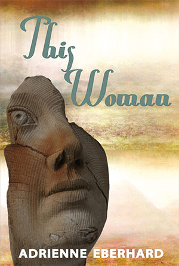
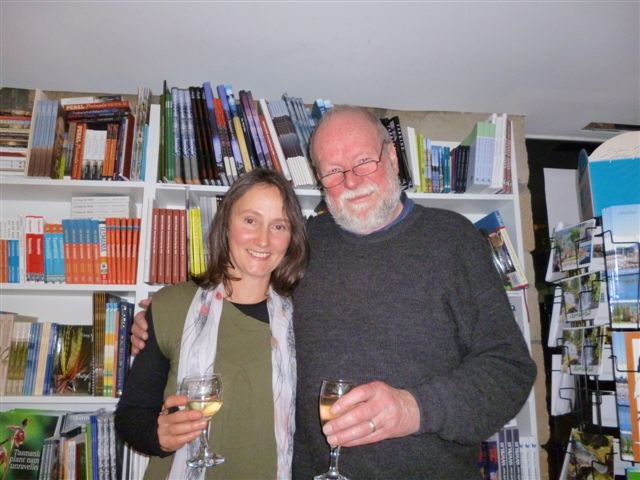

|
This Woman : Adrienne Eberhard |
||||
 |

An engrossing volume... Eberhard writes about the natural world as compellingly as any poet I can think of... In This Woman Eberhard gets personal with Tasmania’s coast, its mud and mountains and snow, and it is wholly sensual... Book Description
She’s not interested
in figureheads, their breasts and tresses a form of treason, it’s more the way a yacht lies under sail, its ability to displace, and sometimes plane, as astonishing as flight. In This Woman Adrienne
Eberhard’s themes of gardens and nature, fecundity, random illness and
cycles of renewal, explore the vital connections that develop between
people and place. Ranging from the D’Entrecasteaux Channel to Canton,
Papua New Guinea and Kew and from the eighteenth century to the
present, these poems investigate ways in which physical places create
mental and emotional spaces fundamental to human needs. Poems about
motherhood and children; birds and animals; Aboriginal hand stencils,
and love poems that draw connections between geography and the human
body, give us an intimate view of our earthly presence. The title poem
adds a plangency and raw tenderness to work which reminds us of what it
means to be human, and in particular, a woman. When Adrienne
Eberhard assumes the persona of Jane, Lady Franklin, wife of the
colonial Governor Sir John Franklin, she releases herself as a poet of
intimate engagements. In a suite of poems, linked together like a chain
of ponds, she follows Jane Franklin's Tasmanian years. Water, rocks,
fossils, step daughters, desire or guilt and betrayal, and love of the
physical world seethe in her lines.
There is rhythmic and linguistic certainty in the development of the
poems that convinces one that the writer is passionately engaged with
her subject matter, rather than being passionately engaged with
artifice. Eberhard is concerned with landscapes of the body, mind and
heart; she has a talent for precise sensuality.
Adrian Caesar, Westerly
ISBN 9781876044725 Published 2011 110 pgs |
||||
Book Sample
Reviews Judith Beveridge Westerly, Volume 57, No.1 / 2012 Adrienne Eberhard’s third collection, This Woman,
ranges across natural and human landscapes with tenderness and vigour.
Eberhard’s love of place, nature, family, human culture and history
have resulted in an engrossing volume. Most plangent and moving is the
eight-part title poem which maps the emotional and physical effect of
the speaker’s diagnosis of breast cancer. Here, what is most impressive
is the way Eberhard imaginatively transforms the subject matter by
using place, art works, Roman mythic history and flotsam, washed upion
a beach to situate the experience. Her ability to bring in so many
layers gives the sequence its weight, yet the poems are never
histrionic or overbearing, and because she so deftly balances history,
art, geography, the solidity of the past with the intimate and
personal, with the evaporative present, she is able to garner much
power. Eberhard writes about the natural world as compellingly as any
poet I can think of. In the poem ‘Heartsease’ she demonstrates how well
she can move from sensual evocation of place to tenderness and love of
the human. This is a book whose language, because of its precision and
sensuality, does justice to a wide range of experiences. Eberhard’s
poems seem expounded wholly from both body and spirit, much like the
cave painter’s work she evokes memorably in her poem ‘Touch’: ...he gathers breath, and as, if to confess, he expels a mouthful of ochre and spit, it flares like blood and there, on the wall, an imprint: his naming, sharp and clear as flint Signifying the Feminine Marietta Elliott-Kleerkoper Rochford Street Review - 19/3/2012 The title of Adrienne Eberhard’s new collection of poetry states her intention boldly: This Woman.
‘This’ signifies the place: the here and now. ‘Woman’ signifies the
feminine, the female domain, a domain also encompassed by the symbolism
of Susan Hawthorne’s ‘Cow’. Margaret Bradstock, in her review of the
collection in Mascara Literary Review
(Issue 10, October 2011), states that it is ‘female poetry’ and that it
is ‘confessional’. I find these epithets limiting. Maybe ‘personal’ and
‘lyrical’ are more apt. However, as we know, the personal is both
universal and political. And these qualities are not necessarily
‘female’, as is demonstrated in new collections such as Luke Davies’
Interferon Psalms and Christopher Swan’s Daylight Dark and Shadow. One of Eberhard’s most significant and enduring influences is Seamus Heany: ‘Seamus Heany... his ability to invoke childhood... his ability to use language and metaphor... his way of anchoring his poems in the natural world... a poet of place...’ ‘In dialogue with Poetry: The intimate self/the invisible mender,’ Adrienne Eberhard, Zest e-magazine, 2007 And Eberhard is herself a poet of place. How could she not be, living by the beauty of the D’Entrecastaux Channel in Tasmania? Across the Channel, Bruny stretches like a tawny lion, colour leaching from tawny hills until grassy slopes are sandy as the beaches rimming the island like an endless string of pearls... ‘Littoral’ Within this landscape, under the ‘enamelled cobalt’ of the sky, are the children ‘claiming the world with their noise’. In this way, the microcosmic and the macrocosmic are united. The notion of place includes its history (a previous volume was Jane Lady Franklin). While Margaret Bradstock may have a point, that Eberhard has romanticised that history in omitting its less palatable aspects (I am not qualified to judge), Eberhard does not shirk from confronting even the most painful experiences. Her poems on breast cancer are hard-hitting, almost savage: Soon her own breast will radiate lurid colour, her son will hold out his small arms and she will turn away, her breasts dangerous. The surgeon will take his knife and rectify. Her breast will follow the knife’s hollowing, all pertness spent in the sharpness of steel, falling into itself, as if trying to salvage something. ‘This Woman’ and there is the pain of witnessing her son’s colour blindness, a condition ‘carried by daughters, inherited by sons’ (‘Vision’). For me, these poems are the most poignant, perhaps partly because I too have suffered breast cancer. Another way Eberhard says Heany has influenced her is in his use of metaphor. She says of metaphor: ‘...in the beginning was metaphor. This is what enables us to see the potential of the world.’ Adrienne Eberhard. Zest e-magazine, 2007 Kinzie has defined metaphor as follows: ‘Usually something physical and capable of being imagined by us visually... is transferred from the literal realm over to the spiritual.’ Mary Kinzie: A Poet’s Guide to Poetry (University of Chicago Press, 1999) In Eberhard’s case, the ‘physical’ is commonly the landscape or the body – one expressed in terms of the other, for example, in poems such as ‘The Natural Order’, where the girl is described in terms of the wind, and ‘Trust’, where the child in his different stages of growth is described in terms of the animals he encountered. Out of this comparison, the message is that we are anchored in the natural world. The comparison can also enhance the description of both the landscape and the figures in the landscape. However, if this becomes too much of a pattern, the power of the comparison can be weakened. Kinzie also points out that: ‘...the poet must find the right objects and the means of shifting the conception of them from one realm to another.’ This can be difficult to achieve. There is a danger of bathos (so well illustrated in the works of Alexander Pope, who uses this device with intent): for example: the comparison of a flock of crows with a bikie gang; a bird’s nest ‘soft as suede shoes’ (reminded me of Elvis: ‘Don’t step on my blue suede shoes!’). A further issue with comparison is its formulation. Simile (‘as’ or ‘like’) introduces a foreign element, to paraphrase Kinzie. In this way it is less direct. Moreover, there is an inherent ambiguity in the simile: the two arms of the comparison are as much unlike as like. It is less of a shifting from one realm to another. In Eberhard’s work there is a preponderance of simile, as opposed to a more direct form of metaphor. Take, for example, the similes used in ‘Littoral’ (see previous quotation). In relation to diction, Kinzie states that: ‘...the more syllables in the word, the more conceptual, cerebral, conversational, and/or editorial it will tend to be.’ Eberhard seems to have a fondness for the longer, latinate word, such as ‘luminous’, ‘translucent, ‘illuminated’, ‘excoriation’. Clearly, there is a place for both what Kinzie calls ‘objective, thing-or texture-filled’ language and abstract language. However, at times, this kind of consciously poetic language, especially if repeated from one poem to the next, or even in the same poem (see use of the word ‘golden’ in ‘Instructions for Learning the Saxophone’, p.80) the language seems over-written, especially in the case of phrases such as ‘luminous light’ and ‘ancient past’, where the adjective is in fact largely redundant. In this collection, the poet has drawn us into her world with intimacy and honesty. It is a world rich in beauty, in history, in love of family. We are indeed ‘very lucky’: ‘And if we are very lucky... the poems we write will briefly repair the holes, the tears, the scatterings, the separations, so that for an instant, as the transaction between reader and poem takes place, the reader will inhabit a world made whole.’ Adrienne Eberhard. Zest e-magazine, 2007) This Woman
Geoff Page
The Canberra Times, 10/12/2011 Although Adrienne Eberhard spent some years in Canberra a decade or so ago it is as a Tasmanian poet she is best known these days. Poetry editor of the (now threatened) Island magazine, Eberhard has a strong feeling for, and understanding of, Tasmanian landscapes and has become a substantial figure in that state’s lively poetic scene. Eberhard’s third book, This Woman, follows (a little distantly) in the wake of her first two, Agamemnon’s Poppies (2003) and Jane, Lady Franklin (2005). Like its predecessors, This Woman displays a strong interest in nature (geology and botany in particular) and what it can tell us about our own human natures. Most of the poems, one way or another, are meditative, outdoors and full of weather. Their scrutiny can be detailed, even exhaustively so for a non-bushwalker, but they are never merely descriptive. Often they are enlivened by her husband - and three young sons (running on ahead) - which gives them an added human dimension. But if these poems are about stones, they are also about flesh. Take the opening of an early poem, ‘In the Mirror’, for instance: ‘Look, you are round again, / breasts alive with blood, swelling / like sun-basking fruit, hips filling / the space and sound of ‘haunches’, growing / into the shape of boulders...’ There are also a number of sophisticated and convincing love poems, such as the book’s final sequence, ‘Earth, Air, Water, Fire’, ‘Knots #vi’ and ‘Phosphorence’ which concludes: ‘a body awash with ecstasy / of another’s lips and fingers; / that moment when we spin / out of orbit, in our skin / the birth of stars’ It’s not all a celebration, however. At the core of this book is the title poem, a sequence of seven parts, all dealing with breast cancer. Here, in the modest and non-histrionic third person, Eberhard traces a wide range of emotions: the loss of control, the cultural importance of the breast itself, the existential terror of the situation, the determination to come through and the power to ‘to live, and let go.’ Sometimes the experience is objectified, as in the contrasting image of the yacht with its ‘mastery of wind and waves’ and its being ‘more certain of the future / than she can ever be.’ In Part iv, however, we are given ‘the foetal crouch / in bed / on the floor / on the phone’ and how ‘nothing has prepared her for this not three lots of childbirth the push and tear and blood of it’ nor ‘climbing at 16000 feet brain begging for oxygen’. In the final third of This Woman, Eberhard returns to some early Tasmanian history (the famous 1792 French garden at Recherche Bay, for instance, and her great-great-great highwayman grandfather transported to Van Diemen’s Land). She also offers us quite a few more ‘outdoor’ poems such as ‘Button Grass’, ‘Mt Wellington Poems’ and ‘Mt Field’ which ends with some very characteristic Eberhard lines: ‘...now our children add their prints / to wallaby and possum, scaffold the wind // with their layered silhouettes, tease out the nuances of light / and reason as they race each other up, up into the rocky sky, / while snowgum limbs stretch sideways in death, and life.’ This Woman Heather Taylor Johnson Wet Ink, No. 25, 2011 Connection to place can truly be a spiritual thing, and Adrienne Eberhard can prove it. In This Woman,
her fourth collection of poems, Eberhard gets personal with Tasmania’s
coast, its mud and mountains and snow, and it is wholly sensual. Her
eyes and ears are drawn to the symmetry of nature and human experience,
perhaps why domestication has never been so satisfying: lovers breathe
in time to the lashings of westerlies, and newborn chil¬dren are
blessed with dolphin totems. Jellyfish become breasts - living and
fragile matter so dear to both seafarer and survivor of breast cancer.
Like mentions of the ocean, breasts abound in This Woman and that connection, too, is a spiritual thing. It is geography and the body:
even the sea, gleaming its silver chainmail under the sun’s last longing glance is a breast rising and falling, and the hills in the day’s final silence are breasts, too, stained purple as lips from summer berries ‘This woman’ There are beautiful, still moments in this collection, even amid nature’s noise, and I caught onto that from the very first page. But the spell waned for me - didn’t wear off, just waned - as I came to realize that the poems are very much the same. I enjoy collections with tight themes and I very much enjoyed the thematic acuteness of this one, but rhythmically, structurally, and emotively there is little variation. Take these first lines from four different poems: A body immersed in the sea (‘The Words) Moonlight creeps tentacles (‘Bailiff Songs’) Our boat floats like a small moon (‘Omens’) Curled on the couch, I read Heaney (‘Water Music’) With each opening we know what we are in for: something emotive and imagistic. In just those few words Eberhard has given us a particular ambiance; she then continues to let it flow until we reach the end of the poem. Her instincts for creating mood are praiseworthy, but I would have appreciated alternative atmospheres. The lack of surprise weighed heavy on me the further I got into the book. I am sure this criticism will turn out to be a saving grace for me one day. Good poetry is not something that I tend to give away or sell to a secondhand bookshop. Good poetry stays on my shelf for future visits, and often I return to them when I am feeling a particular way (so many crossroads in a person’s life; so many poems). This is exactly the kind of book I would choose to read when I am feeling reflective, and that is why This Woman is exactly the kind of book I will pick up again and again. This Woman Margaret Bradstock Mascara Literary Review - 10/10/2011 As the collection’s title suggests, This Woman
is a book of poetry situating the poet within her world. It is female
poetry, confessional poetry, celebrating motherhood, children, love,
nature and its fecundity and, above all, the significance of place,
‘where what matters is/ something other than us’ (p.66).
The prevalence of Tasmanian landscape in the poems is strong, and conjures up an awareness of the island’s history and geography. ‘Littoral’ links the present, encapsulated in the figures of the poet’s sons, with her own responses to the coastal landmarks: These two, mushrooms under the faded indigo of their hats, are the sign posts of her days, the far-reaches of her paddock marked by their small figures running. histories, pulling her like the way they lift their heads to watch the finger-winged passage of a sea eagle sailing the air, its territory marked by the nest of young and the far gum tree. ‘Littoral’ The sequence ‘Mt Wellington Poems’ goes further back into the past, 10,000 years and more, to the time of Gondwana land’s geology and plants: ‘This could be airy ground in Africa,/ the cloud-capped Mountains of the Moon’ (p.61). A response to the Mt Wellington Festival of 2002, in collaboration with poets and scientists, the sequence teaches respect for the native flora and an awareness of its history: ‘This mountain’s history is collection: flanks scoured,/ plants sampled, examined, described and stored’ (p.59). The concept is extended and deepened, both literally and metaphorically, in ‘Managing the Mountain (or Mapping Time’: yet mapped, on the table before us, the mountain shrinks, reduced to kilometres of fire-trail, to the homogenisation of trail head, sign, specification. What’s being mapped is impact, the scars of over-use. ‘Managing the Mountain (or Mapping Time)’ A further poem celebrating landscape and its links to the human condition is ‘Mt Field.’ Here the only scars are created by nature, and we are given a glimpse of a prelapsarian world. Death and life, whether of seasons or snowgum limbs, are natural processes in this poem. While the scenario is beautifully evoked, the end-point of anthropogenic destruction is not touched upon, as it might well have been in the contemporary climate. Likewise, ‘Recherche Bay’ pays tribute to the conceptual fecundity of Lahaie’s garden and the imagined response to it of ship’s steward, Louise Girardon, but makes no mention of the Government-approved road and logging project that threatened the site of the garden as a historic feature in 2005. Two poems, however, might be said to go beyond the idyll of nature undisrupted and extend their horizons in the direction of ecopoesis. The first and most important of these is ‘Trust,’ dedicated to the poet’s husband, his adolescent naming of fish and fauna elevating these to ‘friend,’ a passion later shared by his sons. Now, in an endangered world: He reads the latest reports, insists they only fish in waters swept by Southern Ocean currents, while each day, his sons salvage bones and fossils, shells and starfish to line their bedroom window sill, pulling the river one wave closer each time until at night it laps at their ears and they sleep, their world too small yet for pollution, poison, extinction, knowing only renewal, their trust huge in his hands. p.20 In ‘Owls,’ ‘the insolent slow flap/ of an owl across the bitumen’s sinuous curve’ assails the persona driving home at night: she has not seen owls here for three years their haunting of the dead gum a memory she links to a time when the future was a bowl of blue sky and infinity was the rest of their lives tonight a second owl launches into the night in front of her and she understands she has not lost the future or the past it is here this feather-claw-beak moment that she has found p.30 Notable also, by its near-absence, is the issue of Aboriginality in Tasmania’s black history. There’s a reference to a rock-wall hand imprint on p.1, to ‘native women in this Edenic/ world’ (p.57), but neither the harmonious relations between the d’Entrecasteaux expedition and Lylueqonny natives in 1792, nor the horrific massacres of 1824-31, receive a mention. When it comes to invasions of the landscape of the human body, however, the poet is more confronting. ‘Breast Strokes’ provides a fine commentary on the representation of women’s breasts by traditional male artists, with a contemporary bombshell in the closing stanza on Rembrandt’s contribution: a silent time bomb: her breast − a million breasts − flowering with deadly beauty, the cells that lie, tucked and hidden, shaping the future into which, oblivious, we sail. p.29 Almost a conceit, the poem progresses through repetition of key words, through images of flowers and sailing, to a conclusion which powerfully reverses their expected significance. The centrality of these images is continued in the title sequence, ‘This Woman’:
She’s not interested in figureheads, their breasts and tresses a form of treason, it’s more the way a yacht lies under sail, its ability to displace, and sometimes plane, as astonishing as flight. A boat knows its own destiny; this is the most disturbing thing of all, that in its relentless fracturing of the blue meniscus that surrounds her, a boat is more certain of the future than she can ever be. p.33 There is the starkness of recognition, encapsulated in spare, hard-hitting language:
The surgeon will take his knife and chase the trail of spoor, cut and probe, then sew and rectify. Her breast will follow the knife’s hollowing, all pertness spent in the sharpness of steel, falling into itself, as if trying to salvage something. p.35 and the images of violation: ‘nothing has prepared her for this...blood cells bones clawing each other/ civil war,’ followed ultimately by defiant hope: ‘belief, in everyday miracles;/ anything, the paper nautilus tells her, is possible.’ Reliant on the importance of ‘the small personal voice,’ ‘Breast Strokes’ and ‘This Woman,’ taken together, provide one of the strongest poetic statements in this collection. By contrast, ‘Maze’ is an afterthought, its frame of reference from legend and fairytale unconvincing. Eberhard works best when re-creating the reality of her world, on its own terms. The poem ‘Vision,’ about her son’s colour-blindness, provides an example of this technique. Images and metaphors arise naturally from the subject-matter: In my son’s classroom the children’s postcards line cupboard doors, each asked to draw what they see: 28 blue vases holding flowers, the 29th, pink. the cones of his retina white-washed into seeing the world awry. In his drawings, he’s a stickler for detail as if in its sharpness and accuracy his brain balances out chroma-deficiency, allowing 3D perspectives, upside-down views, a vision unfettered by distance and the quotidian. pp.75-6 Technically, the poet exhibits a penchant for sequences which allow her to explore different aspects of her subject-matter. Some of the images that arise are startling, metaphysical in their implications (‘Walking in the wind, it seemed/ as if the world was a knotted/ ball of wool unravelling,’ p.3; ‘This hut is a harbour, hooked to the mountain,/ scoparias and waratahs burning red candles,’ p.68; ‘This rib you found, leached like driftwood/ and light as pumice stone,’ p.70). Many are maternal, based on her awareness of the female body and its responses (‘the net the fishermen pull/ is full of grief: the stilled voice/ of a new-born child,’ p.21; ‘it’s a journey into time, when the mountain/ was a child sleeping in its mother’s womb,’ p.66). Sometimes, this approach results in over-contrivance (as in the poem ‘Maze’) or the possibility of a clichéd central concept (‘Setting Out,’ ‘Bird Song,’ ‘Seeds’). Overall, however, language in the collection is wielded with style and precision, contributing to the shock of recognition that is poetry’s function:
Some words are like this: when you come across the right ones, their electric stab is like stepping into the ocean, being broken and made whole again, drawing a body to a different realm where uprights and verticals are gone, where sky and water stream in, jettisoning all the mind’s freight. ‘The Words’ Hobart Bookshop 19/6/11 From the bookshop website: ‘After a series of unfortunate events (all the copies from the first print run were flooded, the second shipment was foiled by volcanic ash...), Adrienne Eberhard's beautiful new collection of poems finally arrived in our shop just in time for the launch! It might have been a wet and cold Sunday evening outside, but the shop was warm and cheerful and packed with a crowd for Danielle Wood's launch of This Woman. Danielle shared with us some of her favourite extracts from the book, and Adrienne read several poems, and then patiently signed many, many copies of the book!’  Danielle Wood with Adrienne Eberhard and Danielle's daughter Xanthe (photograph courtesy of Miroslav Prazak)  |
|||||
{kind=link}